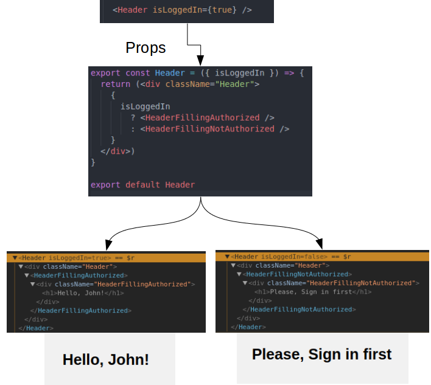
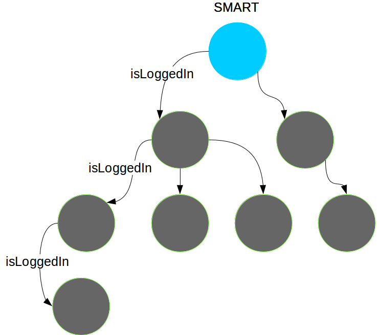
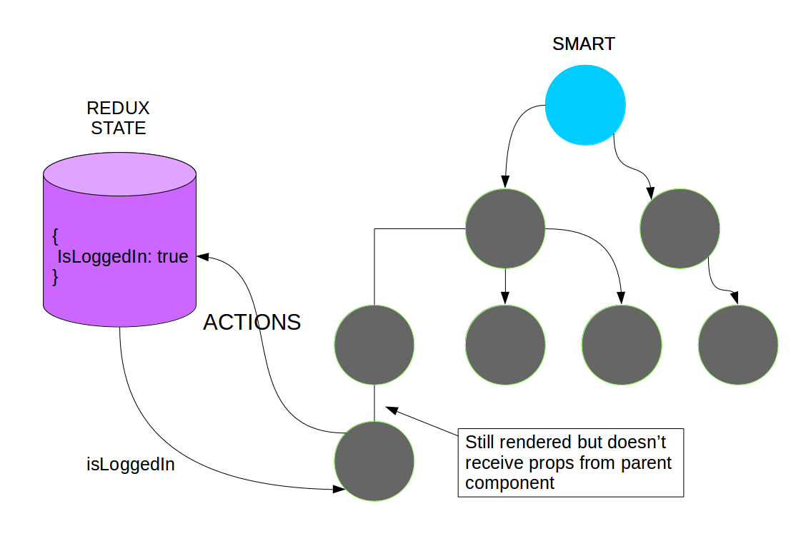
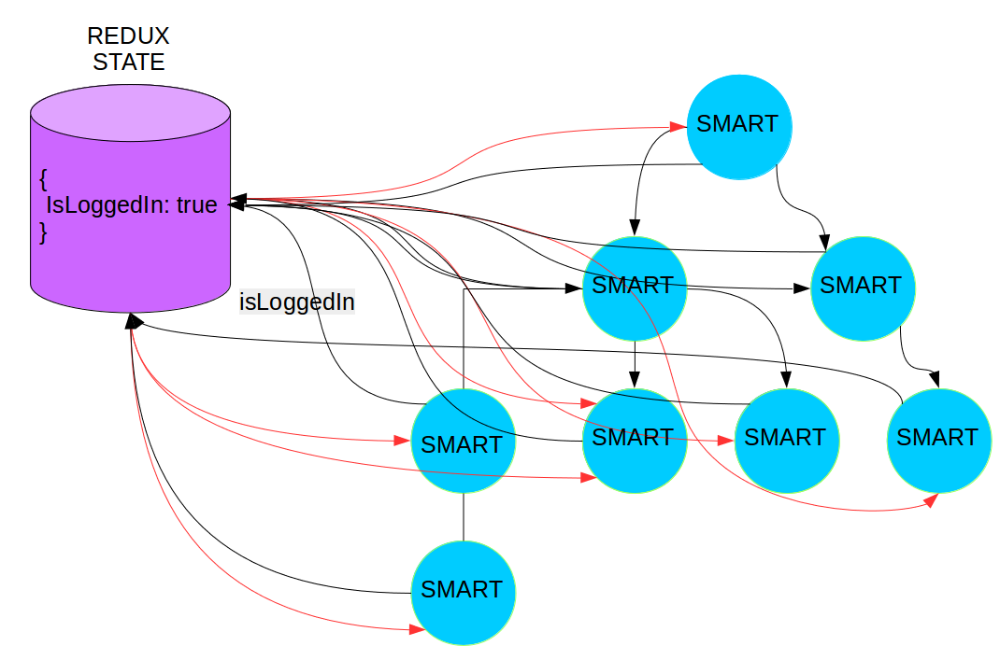
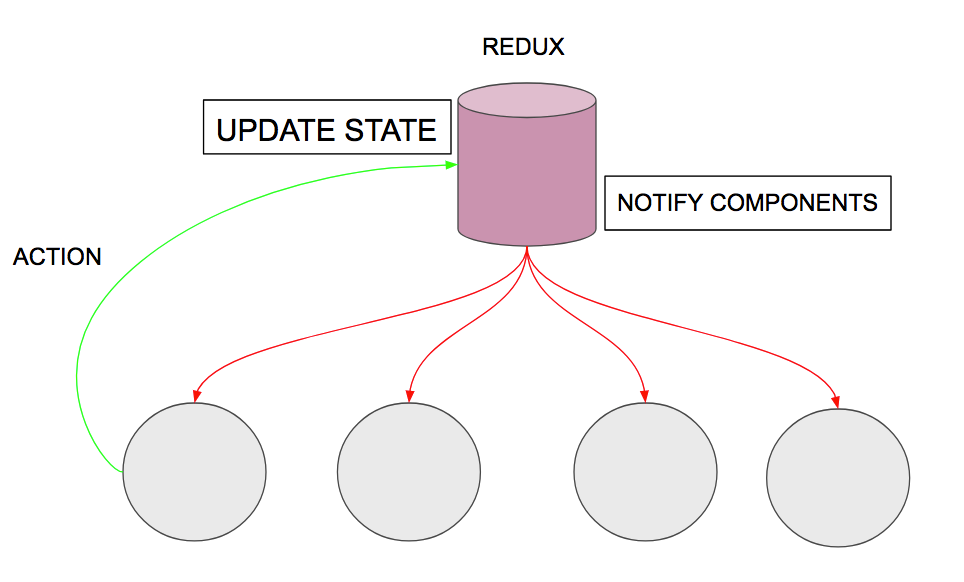

Fullstack Intro to GraphQL based on example application

+

React divides UI into small reusable components

Component is behaving like a function for UI
Component can be also stateful
Life without redux: Waterfall
Cons:
- Code is hard to maintain.
- Change in one props cause waterfall of changes to many other components
- Components are depending on each other - hard to reuse components
Redux for the rescue!
What went wrong? :(
Cons:
- Adding new action requires changes in two places: redux store and component
- Each smart component requires additional code just to connect to redux
- On large scale hard to maintain
- Multiple changes to redux store may create huge performance issues
Redux performance horror
Same code without Redux ( using component state )
Why is this happening?
Data grouped by life time
Short-term
Data that dies along with route
- Unfinished form
Medium-term
Data that survives route change but dies along with browser
- User profile data
- Shoping cart data
Long-term
Data that survives even, if browser dies
- Authorization token
So what should we do?
Short-term data -> use smart components without redux
Mid/long-term data -> use redux to persist reusable informations
Sorry for the long presentation. Here is a potato